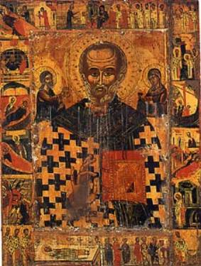

The Legend of the Three Generals – Part 3
Unjustly facing a death sentence, the three
imprisoned generals continue to pray through the night.
Attending to the prayers of those who fear Him and,
like a Father pouring out compassion on His children, God sends Nicholas to
help the condemned men. That night Nicholas appears to the emperor in a dream
and says: “Arise, Emperor. Rise
quickly. You must free the three men whom you’ve condemned to death. If you
don’t do as I say, God will involve you in a war that will result in your own
death.”
The emperor responds, “Who are you to threaten me,
and how did you manage to get into the palace at this hour?”
Nicholas explains, “I am the Bishop of Myra,
Nicholas, and God has sent me to tell you that these three men must be freed
without delay.”
The emperor becomes confused and, arising, begins to
ponder upon what this vision means.
In the meantime, Nicholas also appears in a dream to
Evlavius and says: “Evlavius, you who seem to have lost his mind, will you tell
me why you permitted yourself to be bribed, and why you’ve done such grave
injury to three innocent men? Free them at once, or I’ll ask God to take your
life.”
Evlavius asks Nicholas who he is, and the bishop
identifies himself. Evlavius wakes up, confused and troubled. But even while
he’s still lying in bed, trying to shake off the fearful impact of the dream,
he’s summoned from his quarters by a palace attendant, who shouts, “Hurry up,
the emperor wants you!”
The chancellor rushes over to the emperor and
Constantine tells him of his vision. Evlavius confesses that he had virtually
the same dream. He’s puzzled by it and feels that the three generals should be
asked to explain the whole awesome and frightening experience.
When the commanders are brought to the palace, the emperor asks them, “What magic have you been practicing to cause us dreams and sleepless nights?” The generals look at each other in puzzlement. Filled with fear, they’re unable to answer or even to ask the emperor to explain his bewildering question.
Seeing their confusion, Constantine abandons his
brusqueness and says in a more kindly manner, “Go ahead; you may answer without
being afraid. I’m your friend as well as your emperor.”
But the shaken generals still don’t know what to make of it all. Having themselves spent a sleepless night, praying, they now think that they’re facing a new accusation: having tried to work a magic spell on the emperor!
They keep their eyes fixed on the ground and remain
silent. But when he asks the question again, Nepotianus speaks: “Our Emperor!
We’ve practiced no magic against you. We’ve never so much as uttered a word
against you. In the name of God, we were brought up by our parents to respect
God first and our emperor second. Loyal as we are, we went to Phrygia to deal
with the Taiphalis. We scorned all temptations. With God’s help, we carried out
your instructions, hoping to gain your appreciation. But now we not only face
dishonor, but death as well.”
The emperor, touched by their obvious sincerity, tries to get to the bottom of the mysterious dream. “Do you know a man called Nicholas?” asks the emperor.
Hearing this name, they take heart, and with one
voice they again pray: “God of Nicholas, hear us, and as you saved
the three men of Myra who were unjustly condemned, save us from this death we
don’t deserve.”
The emperor questions them closely on Nicholas’ identity and role in their adventure. General Nepotianus describes the events in Myra. They’d been particularly impressed, he recalls that no one, including the Prefect Eustathius, had dared to contradict the bishop. He concludes:
“And so, O Emperor of ours, having seen all this with our very own eyes, and remembering how the Saint had rescued these three men, we appealed to God that, through the Saint’s prayers, he might help us.”
Constantine begins to tremble before the judgment of God and feels ashamed of his actions, seeing that he – being a lawgiver for others – is ready to make a lawless judgment. Repenting of his rash behavior, he looks compassionately upon the condemned men and says. “It’s not I that grant you life, but the great servant of the Lord, Nicholas, whom you called upon for help. Go to him and offer him thanksgiving. Say to him also from me that ‘I fulfilled your command that the servant of Christ be not angry with me.’”
Listening to his remorseful speech, the commanders
suddenly see a vision of Nicholas sitting next to the emperor and, by signs,
promising him forgiveness. Constantine hands them a gold-covered Bible, a
golden censer ornamented with precious stones, and two golden candlesticks. As
an act of repentance, he orders all this to be given to the church of Myra and
sets the generals free.
The commanders set out on their way at once.
Arriving in Myra, they rejoice that they’re able to see Nicholas again. They
express great gratitude to the bishop for his wonderful help and chant: “Lord,
O Lord, who is like unto You? Delivering the beggar from the hand of them that
are stronger than he.”
Bishop Nicholas receives them gracefully, but
brushes away all their thanks to him personally. Instead, he urges them to
praise the Lord Who has miraculously saved them from an unjust fate.
The three generals soon give their personal
possessions to the poor and to their relatives, and they become monks. Thus
ends the oldest of the triple miracles attributed to Nicholas.
Thought to Ponder: St. Nicholas is known as
the friend and protector of all those in trouble. The deliverance of these
three officers naturally caused St. Nicholas to be invoked by them and on their
behalf, and many miracles of his intervention are recorded throughout the
Middle Ages by those who did the same!
Thought to Discuss around the Dinner Table: On several occasions
Nicholas jeopardized his own life by befriending people who had been wrongly accused.
What are we willing to risk to defend those who need us? Our wealth? Our
reputation? Our life?
The Legend of the Three Generals – Part 3

“’Come, you blessed of My Father, inherit the
kingdom prepared for you from the foundation of the world: for I was hungry and
you gave Me food; I was thirsty and you gave Me drink; I was a stranger and you
took Me in; I was naked and you clothed Me; I was sick and you visited Me; I was
in prison and you came to Me.’.” (Matthew
25:34-36 NKJV)